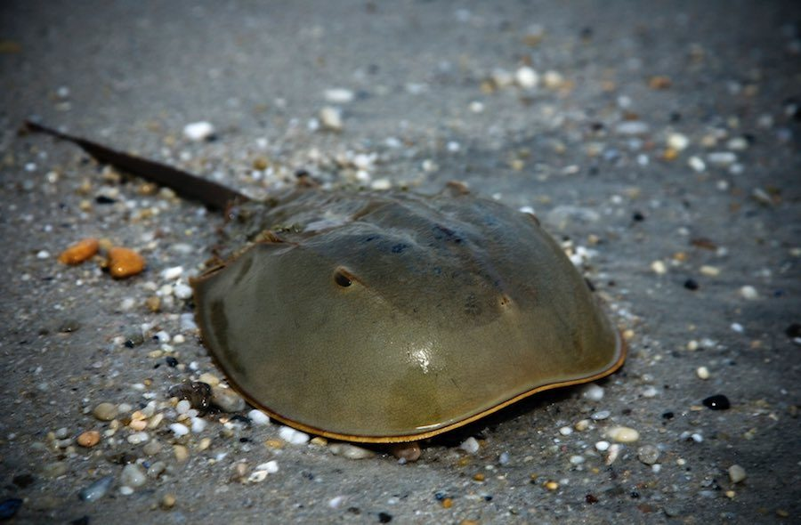

¿QUE SON LOS PECES?:
Los peces (del latín pisces) son animales vertebrados primariamente acuáticos, generalmente ectotérmicos (regulan su temperatura a partir del medio ambiente) y con respiración por branquias. Suelen estar recubiertos por escamas, y están dotados de aletas, que permiten su movimiento continuo en los medios acuáticos, y branquias, con las que captan el oxígeno disuelto en el agua. El grupo Pisces no es un taxón porque sería parafilético. Los peces son abundantes tanto en agua salada como en agua dulce, pudiéndose encontrar especies desde los arroyos de montaña (por ejemplo, el gobio), así como en lo más profundo del océano (por ejemplo, anguilas tragonas).
Los alimentos preparados con pescado son una importante fuente de alimentación para los seres humanos. Pueden ser grandes partir de ejemplares silvestres, o criados de manera similar al ganado (véase acuicultura). Hoy en día la llamada pesca deportiva cada día se vuelve una actividad más popular. Los peces han tenido un papel importante en muchas culturas a través de la historia, que van desde las deidades religiosas a temas de libros y películas.
La especialidad de la zoología que estudia específicamente a los peces se denomina ictiología.
Aprende mas sobre la Ictiologia aqui:!Ictiologia,mas que peces!
HABLEMOS DEL Cangrejo Herradura(Limulus polyphemus)

El cangrejo herradura del Atlántico o cangrejo cacerola (Limulus polyphemus) es una especie de quelicerado de la clase Merostomata.
Llega a alcanzar 60 cm de largo y 30 cm de ancho. A pesar de su nombre, esta especie está más próxima a las arañas y escorpiones (arácnidos), que a los cangrejos (crustáceos),3 con los que no guarda ninguna relación. Habita en las zonas costeras y los estuarios fluviales.
Se encuentra amenazado de extinción y reduciendo sus poblaciones de una forma lenta pero constante. Las causas que se han relacionado con esta situación son el cambio climático que acelera las emisiones de gases de invernadero y también la sobrepesca y captura para aprovechamiento por las farmacéuticas de su hemolinfa (sangre) en test de toxicidad de medicamentos.
Observa mas sobre el Cangrejo Herradura aqui:!Cangrejo Herradura!
HABLEMOS DEL Fragata Portuguesa(Physalia physalis)
La carabela portuguesa (Physalia physalis), también conocida como fragata portuguesa, barquito portugués, hombre de guerra portugués, agua mala, aguaviva, botella azul o falsa medusa, es una especie colonial monotípica de hidrozoo sifonóforo de la familia Physaliidae.
Se suele encontrar en mar abierto en todas las aguas cálidas del planeta, en especial en las regiones tropicales y subtropicales de los océanos Pacífico e Índico, así como en la corriente del Golfo atlántica. Su picadura es peligrosa y muy dolorosa. Cada colonia va sola, no en grupos.
Observa mas sobre la Fragata Portuguesa aqui:!Carabela Portuguesa!
HABLEMOS DEL Pez Piedra(Synanceia horrida)
El pez piedra de estuario (Synanceia horrida) es una especie de pez escorpeniforme perteneciente a la familia Synanceiidae3 que habita en aguas tropicales de los océanos Índico y Pacífico, sobre todo en aguas específicas de Australia y el archipiélago malayo.
Es el actinopterigio más venenoso, y el contacto directo con las espinas de sus aletas, que contienen un potente veneno neurotóxico, puede ser mortal para los seres humanos. Cuando se camufla se asemeja a una roca (de ahí su sobrenombre), lo que los hace pasar desapercibidos y pueden ser pisados de forma accidental.
Sus púas se localizan en la aleta dorsal, anal y pélvica, cada una de ellas con una glándula venenosa. El veneno es tan potente como el de la cobra, tiene citotoxinas y neurotoxinas. Al picarse con una espina aparece un dolor intenso y lacerante, el dolor se irradia por todo el miembro y alcanza su máximo a la hora. Se acompaña de dolor de cabeza, vómitos, espasmos intestinales, hipertensión arterial, en ocasiones con arritmias cardíacas, parálisis musculares, convulsiones, coma, parada cardiorrespiratoria y si no es atendida puede causar la muerte. Si sobrevive el paciente, la curación de la herida es lenta, con abscesificación de la misma. También posee una segunda línea de defensa, los tubérculos, que son unas glándulas que además de ayudar a mimetizar al pez segregan una toxina fulminante.
Observa mas sobre el Pez Piedra aqui:!Pez Piedra!
Mas informacion y nuevos articulos proximamente...